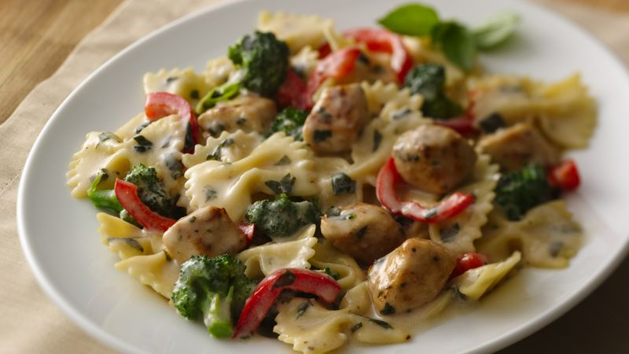

Chicken Pasta with Creamy Basil Sause Recipe

Description
Lighten up with a creamy chicken dinner made with All Natural Fat Free plain yogurt.
Ingrediens
- 3 cups uncooked bow-tie (farfalle) pasta
- 2 cups fresh broccoli florets
- 1 tablespoon canola oil
- 1 lb boneless skinless chicken breasts, cut into 1-inch pieces
- 1/2 teaspoon garlic-pepper blend
- 1 cup Progresso™ chicken broth (from 32-oz carton)
- 1 tablespoon cornstarch
- 1 teaspoon sugar
- 1 small red bell pepper, chopped
- 3/4 cup Yoplait® All Natural Fat Free plain yogurt (from 2-lb container)
- 3 to 4 tablespoons chopped fresh basil leaves or 1 teaspoon dried basil
Steps
- Cook pasta as directed on package, adding broccoli during last 4 minutes of cook time; drain.
- Meanwhile, in 12-inch nonstick skillet, heat oil over medium-high heat. Add chicken; sprinkle with garlic-pepper. Cook about 3 minutes, stirring occasionally, until chicken is no longer pink in center.
- In small bowl, mix chicken broth, cornstarch and sugar. Add to skillet with bell pepper. Cook about 3 minutes or until sauce is thickened. Stir in pasta, yogurt and basil. Heat over low heat just until hot (do not boil).